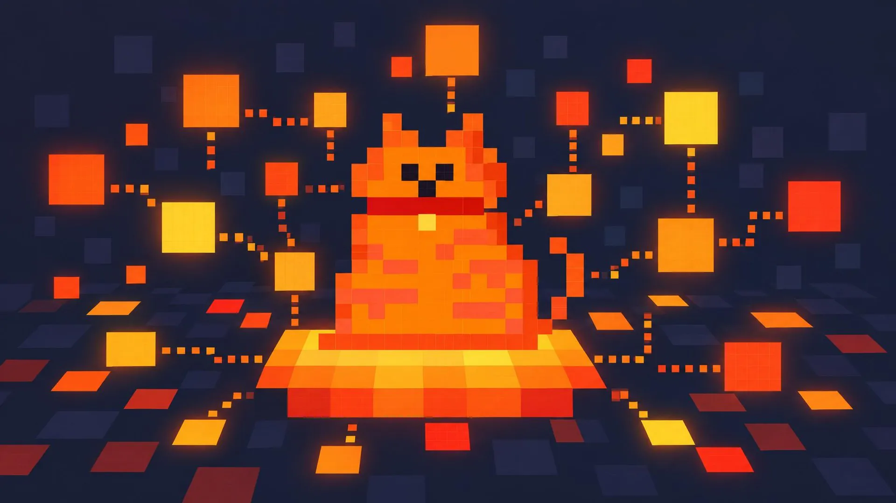

Chess Harness

LE CHONK
Mistral Large 4 — the fat cat plays White, out loud
White opens the game.
Undo
New game
Autoplay: off (0)
API key (J)
Log (L)
Chonk: thinking
LE CHONK THINKING
You (Black) vs White AI
— the model playing White is named above ·
0
autoplay ·
J
API key ·
L
log ·
Chess on Wikipedia
AUTOPLAY (0 to toggle)